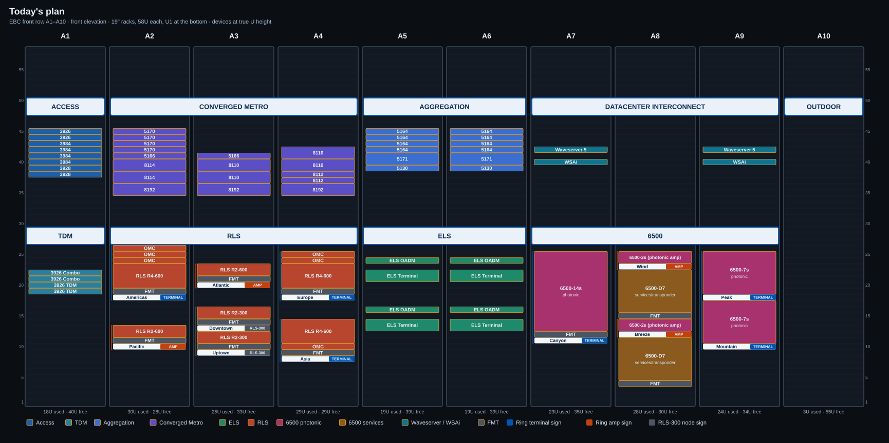
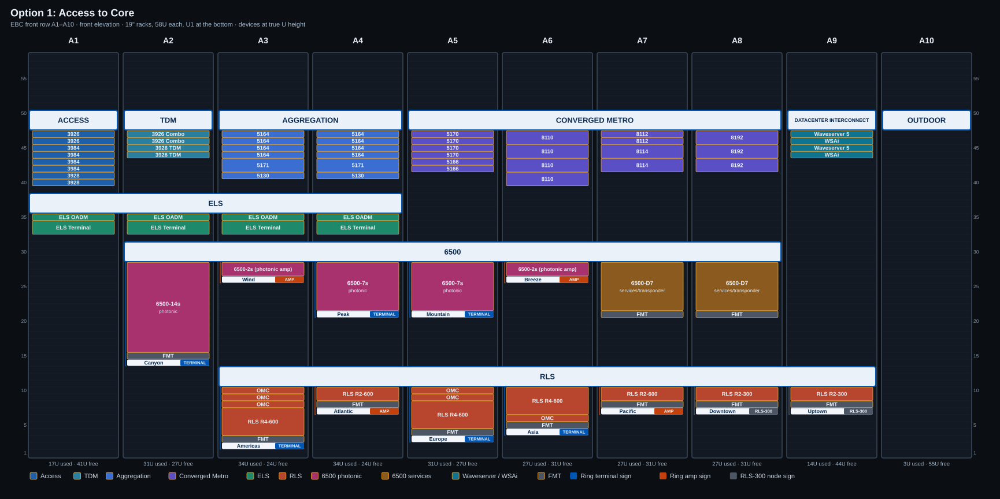
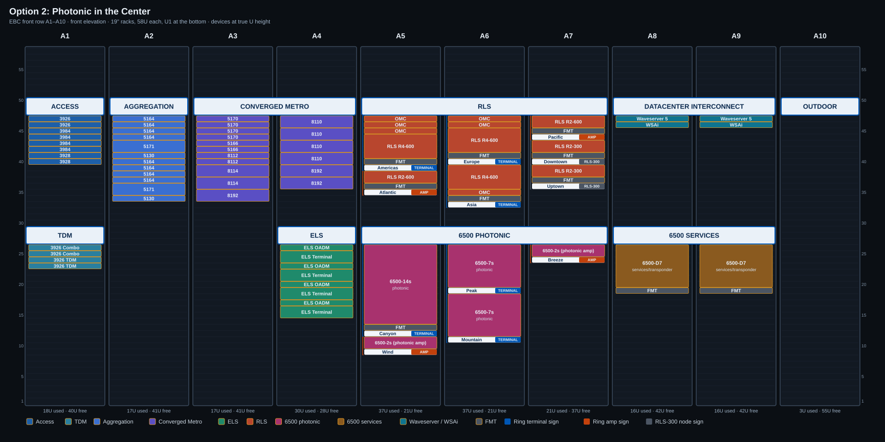
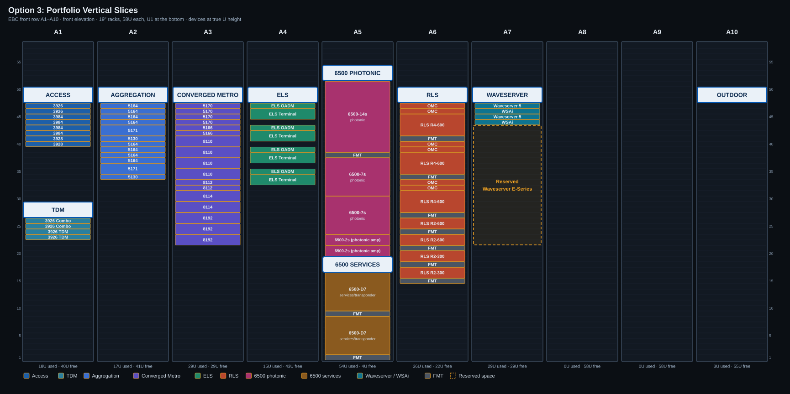

Front-row options, racks A1–A10
Ten 19" racks, 58U each, U1 at the bottom. Every option places the same 83 devices as today's plan, each once, at true U height; zone placards are 3U. The RLS and 6500 rings are 5 nodes each (3 terminals, 2 amps); every node stays whole in one rack with a 1U name sign just below it, tagged terminal or amp. U used counts devices, placards, node signs and reserved space. These are separate from the rack layouts in the 3D scene's ‹ / › switcher, which only move whole sections between racks.
Today's plan

The story, left to right
- A1: Access on top, TDM underneath.
- A2–A4: Converged Metro on top, RLS underneath.
- A5–A6: Aggregation on top, ELS underneath.
- A7–A9: Datacenter Interconnect on top, 6500 underneath.
- A10: Outdoor.
Room to grow
- More 8100s: Converged Metro (A2–A4) has U30–U34 free under each 8192, plus U42–U47 in A3 and U43–U47 in A4.
- More 5164s: Aggregation (A5–A6) has U30–U38 free under each 5130.
- Waveserver E-Series: no space is set aside. A7 and A9 have U30–U39 free under the WSAi.
Trade-offs
- Packet and optical share every rack, so no rack tells one story top to bottom.
- Aggregation (A5–A6) sits right of Converged Metro (A2–A4), so walking left to right the packet story goes access, metro, aggregation: out of order.
- The 6500 photonic and services shelves are mixed across A7–A9, and neither ring reads in ring order: the RLS nodes jump between A2, A3 and A4, and the 6500 nodes between A7, A8 and A9.
U used and free per rack
| Rack | Devices | Placards | Node signs | Reserved | Used | Free | Free U |
|---|---|---|---|---|---|---|---|
| A1 | 12 | 6 | 18 | 40 | U1–U18, U23–U26, U30–U37, U46–U47, U51–U58 | ||
| A2 | 22 | 6 | 2 | 30 | 28 | U1–U9, U14–U17, U30–U34, U46–U47, U51–U58 | |
| A3 | 16 | 6 | 3 | 25 | 33 | U1–U8, U17–U19, U24–U26, U30–U34, U42–U47, U51–U58 | |
| A4 | 21 | 6 | 2 | 29 | 29 | U1–U7, U15–U17, U26, U30–U34, U43–U47, U51–U58 | |
| A5 | 13 | 6 | 19 | 39 | U1–U12, U15, U17–U20, U23, U25–U26, U30–U38, U46–U47, U51–U58 | ||
| A6 | 13 | 6 | 19 | 39 | U1–U12, U15, U17–U20, U23, U25–U26, U30–U38, U46–U47, U51–U58 | ||
| A7 | 16 | 6 | 1 | 23 | 35 | U1–U10, U26, U30–U39, U41, U43–U47, U51–U58 | |
| A8 | 20 | 6 | 2 | 28 | 30 | U1–U3, U26, U30–U47, U51–U58 | |
| A9 | 16 | 6 | 2 | 24 | 34 | U1–U9, U26, U30–U39, U41, U43–U47, U51–U58 | |
| A10 | 0 | 3 | 3 | 55 | U1–U47, U51–U58 | ||
| Row | 218 | 362 | of 580U | ||||
Option 1: Access to Core

The story, left to right
- Top band, left to right: Access (A1), TDM (A2), Aggregation (A3–A4), Converged Metro (A5–A8), Datacenter Interconnect (A9).
- Optical layers stacked under it, top to bottom: ELS (A1–A4); 6500 (A2–A8), one ring node per rack in ring order: Canyon, Wind, Peak, Mountain, Breeze, then the two D7 services shelves; RLS (A3–A9), one ring node per rack in ring order: Americas, Atlantic, Europe, Asia, Pacific, then Downtown and Uptown.
- A10: Outdoor.
Fit
Converged Metro needs four racks (A5–A8) to keep the top band 8U deep, so the Waveserver 5 / WSAi pairs move into one Datacenter Interconnect rack (A9). The 6500 band is as deep as Canyon (14s + FMT + sign, 15U) and the RLS band as deep as Americas (3 OMC + R4-600 + FMT + sign, 9U), which puts the RLS nodes at U2–U10.
Room to grow
- Waveserver E-Series: A9 has U14–U43 free under the Datacenter Interconnect stack (30U).
- More 8100s: Converged Metro (A5–A8) is clear of the ELS band, so it can grow down to U32 (to U39 in A6).
- More 5164s: Aggregation (A3–A4) has only U39–U40 before the ELS band. More than 2U each means moving ELS or spilling into another rack.
Trade-offs
- This is the only option where the packet story reads left to right in network order.
- Both rings read node by node in ring order across the row, but each ring is spread over five racks.
- The RLS band sits at U2–U13, at knee height.
- Aggregation is boxed in by the ELS band; Converged Metro and the right-hand racks have room.
U used and free per rack
| Rack | Devices | Placards | Node signs | Reserved | Used | Free | Free U |
|---|---|---|---|---|---|---|---|
| A1 | 11 | 6 | 17 | 41 | U1–U32, U39, U51–U58 | ||
| A2 | 21 | 9 | 1 | 31 | 27 | U1–U13, U32, U39–U43, U51–U58 | |
| A3 | 20 | 12 | 2 | 34 | 24 | U1, U14–U25, U32, U39–U40, U51–U58 | |
| A4 | 20 | 12 | 2 | 34 | 24 | U1–U6, U14–U20, U32, U39–U40, U51–U58 | |
| A5 | 20 | 9 | 2 | 31 | 27 | U1–U2, U14–U20, U32–U41, U51–U58 | |
| A6 | 16 | 9 | 2 | 27 | 31 | U1–U3, U14–U25, U32–U39, U51–U58 | |
| A7 | 17 | 9 | 1 | 27 | 31 | U1–U6, U14–U20, U32–U41, U51–U58 | |
| A8 | 17 | 9 | 1 | 27 | 31 | U1–U6, U14–U20, U32–U41, U51–U58 | |
| A9 | 7 | 6 | 1 | 14 | 44 | U1–U6, U14–U43, U51–U58 | |
| A10 | 0 | 3 | 3 | 55 | U1–U47, U51–U58 | ||
| Row | 245 | 335 | of 580U | ||||
Option 2: Photonic in the Center

The story, left to right
- Left, route/switch: Access over TDM (A1), Aggregation (A2), Converged Metro (A3–A4).
- Center, photonic (A5–A7), both rings in ring order: RLS on top (Americas + Atlantic in A5, Europe + Asia in A6, Pacific + the Downtown/Uptown pair in A7); 6500 photonic below (Canyon + Wind in A5, Peak + Mountain in A6, Breeze in A7).
- Right, service interfaces (A8–A9): Waveserver 5 + WSAi on top, 6500-D7 services below.
- ELS is under Converged Metro in A4, right next to the photonic center: it is a line system, but the brief keeps the center for RLS and 6500.
- A10: Outdoor.
Fit
Fits in A1–A9 with no extra racks. RLS sits at the usual U48 placard line and 6500 photonic at the U27 line, so the photonic center lines up with today's signage heights.
Room to grow
- Waveserver E-Series: A8–A9 have U30–U45 free (16U each) under the Waveserver 5 / WSAi, right in the service-interface zone.
- More 8100s: A3 has U1–U33 free under Converged Metro; A4 has U30–U35 before ELS.
- More 5164s: A2 has U1–U33 free under Aggregation.
Trade-offs
- The photonic center (A5–A7) is the visual anchor and sits on the conference-table axis (A6).
- Service interfaces are grouped, so a client-to-line story (A8–A9 → A5–A7) is easy to tell.
- ELS is apart from RLS/6500, under the packet gear in A4.
- The lower halves of A2–A3 are empty, which looks unfinished until growth arrives.
U used and free per rack
| Rack | Devices | Placards | Node signs | Reserved | Used | Free | Free U |
|---|---|---|---|---|---|---|---|
| A1 | 12 | 6 | 18 | 40 | U1–U22, U30–U39, U51–U58 | ||
| A2 | 14 | 3 | 17 | 41 | U1–U33, U51–U58 | ||
| A3 | 14 | 3 | 17 | 41 | U1–U33, U51–U58 | ||
| A4 | 24 | 6 | 30 | 28 | U1–U14, U30–U35, U51–U58 | ||
| A5 | 27 | 6 | 4 | 37 | 21 | U1–U8, U30–U34, U51–U58 | |
| A6 | 27 | 6 | 4 | 37 | 21 | U1–U10, U30–U32, U51–U58 | |
| A7 | 11 | 6 | 4 | 21 | 37 | U1–U23, U30–U35, U51–U58 | |
| A8 | 10 | 6 | 16 | 42 | U1–U18, U30–U45, U51–U58 | ||
| A9 | 10 | 6 | 16 | 42 | U1–U18, U30–U45, U51–U58 | ||
| A10 | 0 | 3 | 3 | 55 | U1–U47, U51–U58 | ||
| Row | 212 | 368 | of 580U | ||||
Option 3: Portfolio Vertical Slices

The story, left to right
- One rack per product line, left to right: Access + TDM (A1), Aggregation (A2), Converged Metro (A3), ELS (A4), 6500 photonic (A5), 6500 services (A6), RLS (A7), Waveserver (A8).
- Each ring is one rack, top to bottom in ring order: 6500 Canyon, Wind, Peak, Mountain, Breeze (A5); RLS Americas, Atlantic, Europe, Asia, Pacific, then Downtown and Uptown (A7).
- ELS gets its own rack at A4, on the boundary between packet and optical: it is the access/edge line system, so it starts the optical half next to the packet racks that it carries.
- A9 is left empty for a future slice. A10: Outdoor.
Fit
The 6500 no longer fits in one rack: with a name sign under each ring node it needs 37U photonic + 16U services + two placards = 59U, one more than a 58U rack. The two D7 services shelves therefore get their own rack (A6) next to the photonic one, which pushes RLS to A7 and Waveserver to A8. RLS still fits in one rack (40U with signs + placard = 43U).
Room to grow
- Waveserver E-Series: A8 has 22U marked as reserved (U22–U43) under the Waveserver 5 / WSAi.
- More 8100s: A3 has U1–U21 free (21U) under Converged Metro.
- More 5164s: A2 has U1–U33 free (33U) under Aggregation.
- A9 is an empty rack for a new slice; A6 (6500 services) has U1–U31 free for more D7 shelves.
Trade-offs
- Each rack is one product line, so it is easy to point at "the 6500 rack" or "the RLS rack".
- Each ring reads as one column: five signed nodes, terminals and amps, top to bottom.
- The 6500 takes two racks (photonic, services), so "one 6500 rack" becomes a pair; RLS moves to A7, one rack right of the conference-table axis.
- The network story is per product, not per network layer, and A9 looks empty until a new slice arrives.
U used and free per rack
| Rack | Devices | Placards | Node signs | Reserved | Used | Free | Free U |
|---|---|---|---|---|---|---|---|
| A1 | 12 | 6 | 18 | 40 | U1–U22, U30–U39, U51–U58 | ||
| A2 | 14 | 3 | 17 | 41 | U1–U33, U51–U58 | ||
| A3 | 26 | 3 | 29 | 29 | U1–U21, U51–U58 | ||
| A4 | 12 | 3 | 15 | 43 | U1–U32, U36, U40, U44, U51–U58 | ||
| A5 | 32 | 3 | 5 | 40 | 18 | U1–U10, U51–U58 | |
| A6 | 16 | 3 | 19 | 39 | U1–U31, U51–U58 | ||
| A7 | 33 | 3 | 7 | 43 | 15 | U1–U7, U51–U58 | |
| A8 | 4 | 3 | 22 | 29 | 29 | U1–U21, U51–U58 | |
| A9 | 0 | 0 | 0 | 58 | U1–U58 | ||
| A10 | 0 | 3 | 3 | 55 | U1–U47, U51–U58 | ||
| Row | 213 | 367 | of 580U | ||||